January 2016
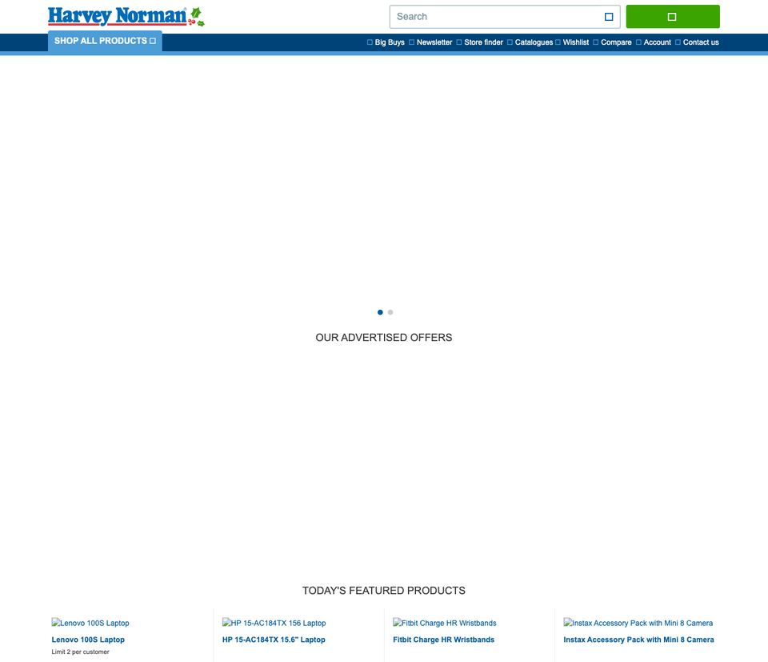
Categories sit in the Shop All Products menu in the header, as a text list. Under the banner: featured products. No picture row.
Open this snapshot in the Internet ArchiveThe harveynorman.com.au homepage from 2016 to 2026, from the Internet Archive’s snapshots: the header, menu and banner, where a category row would sit.
What they show: none of these snapshots has a row of category pictures or icons like the one proposed. Until 2025, categories were a text list in the Shop All Products menu; since May 2025, a Shop menu button. The space under the banner has held featured products, and more recently promotion tiles.
Where Harvey Norman has used category navs: on the sale and event pages, not the homepage. Hot Deals has had “Deals by category” icon tiles since at least 2019, Clearance since 2021, and Sale, Black Friday, Outdoor Living, TV & Home Theatre and Games Hub have them today. See all 18 category navs.

Categories sit in the Shop All Products menu in the header, as a text list. Under the banner: featured products. No picture row.
Open this snapshot in the Internet ArchiveSame structure: a text menu for categories, the banner, then featured products.
Open this snapshot in the Internet Archive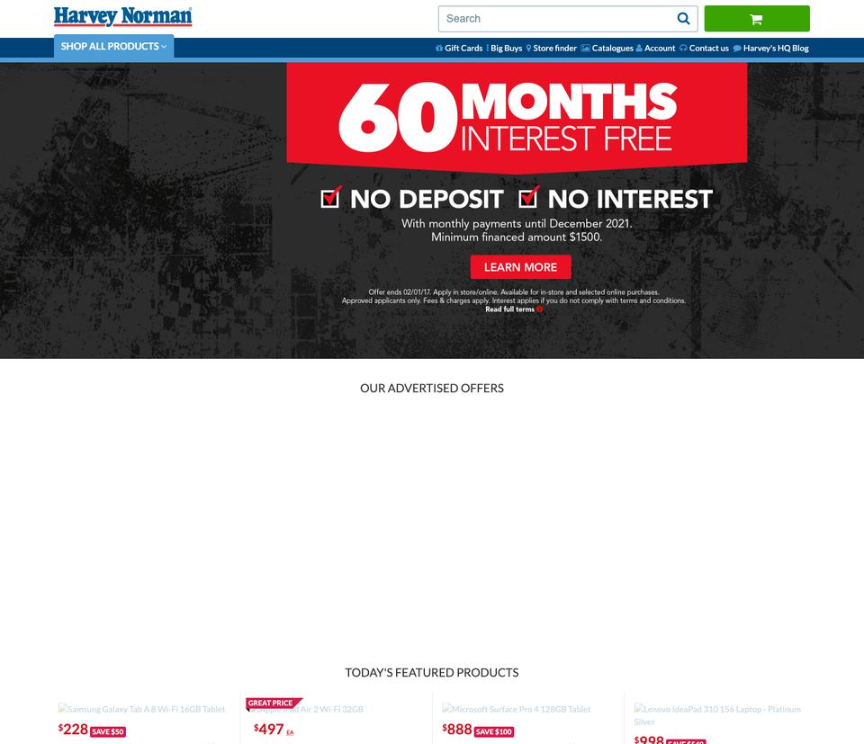
Text menu, banner, featured products. No category tiles.
Open this snapshot in the Internet Archive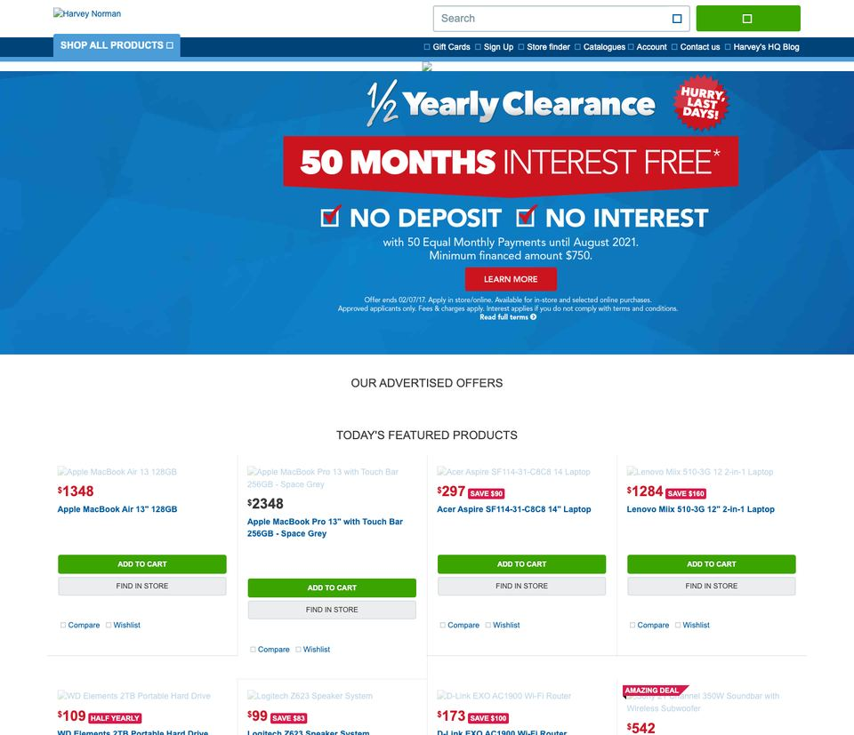
Unchanged: categories stay in the text menu.
Open this snapshot in the Internet Archive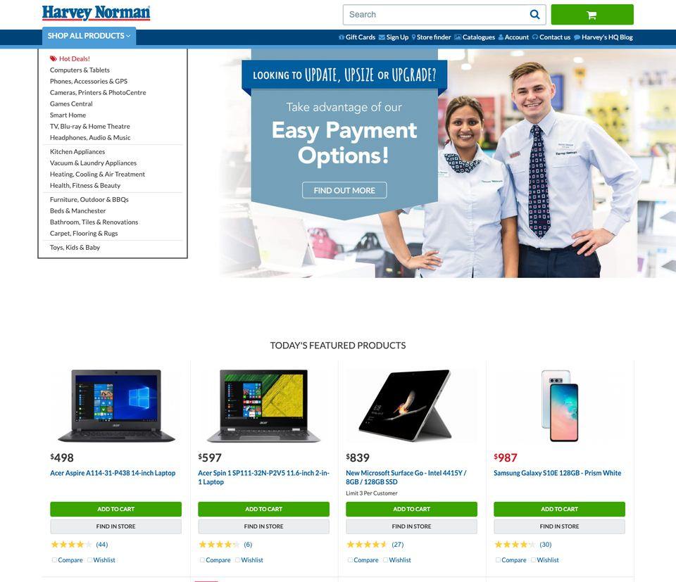
The Shop All Products menu opens as a list of category names beside the banner.
Open this snapshot in the Internet Archive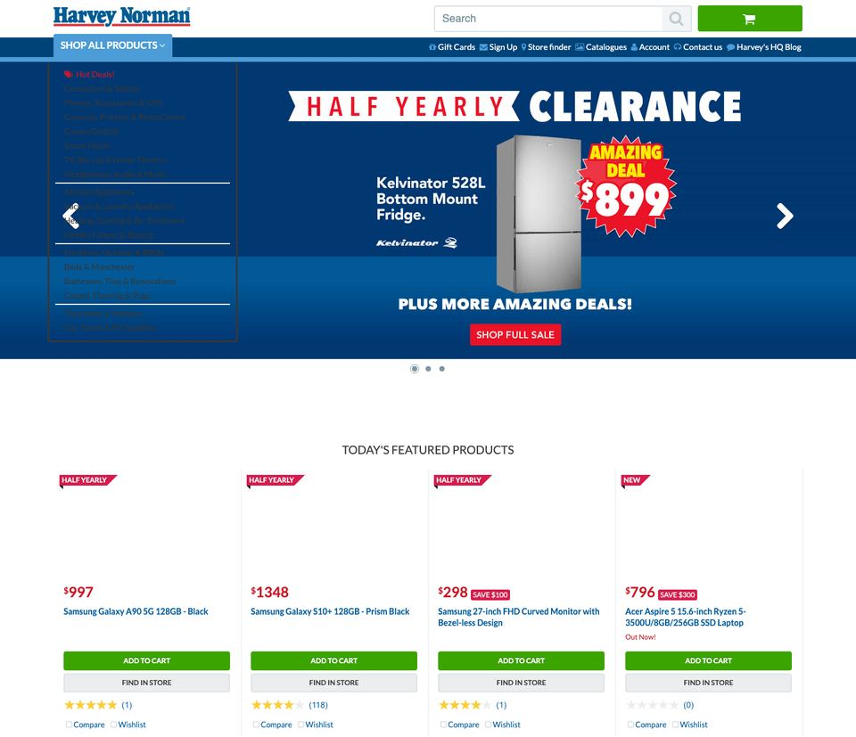
Shop All Products, a text list, is still the only category navigation.
Open this snapshot in the Internet Archive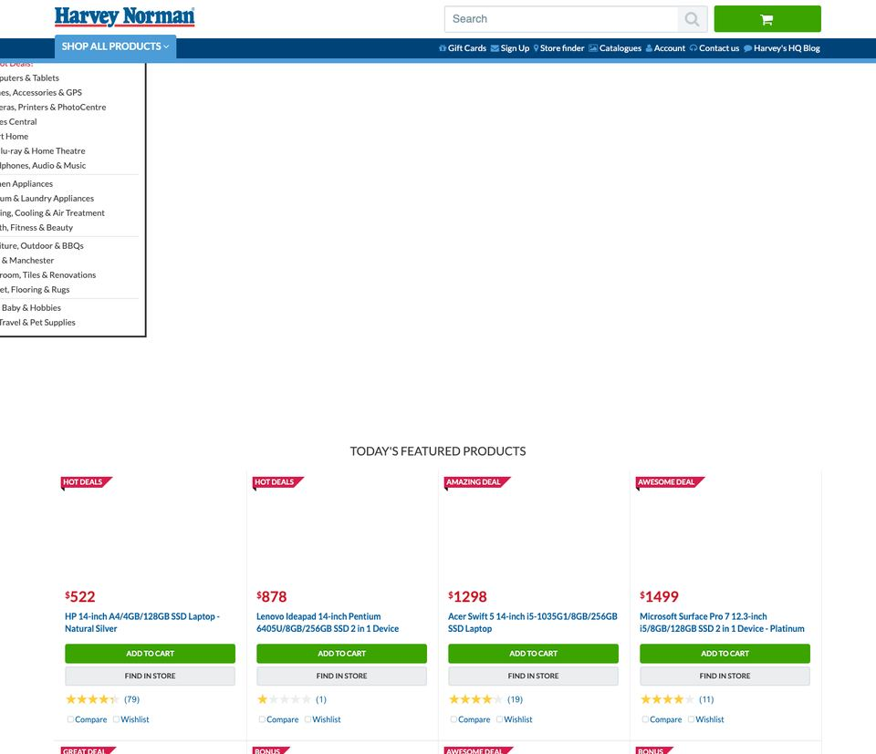
Same: text list beside the banner, then featured products.
Open this snapshot in the Internet Archive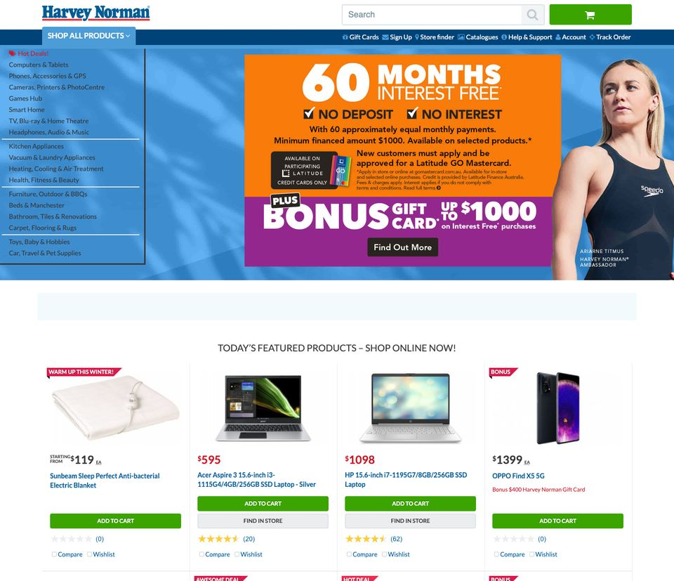
Text menu and banner, then featured products. Still no picture row.
Open this snapshot in the Internet Archive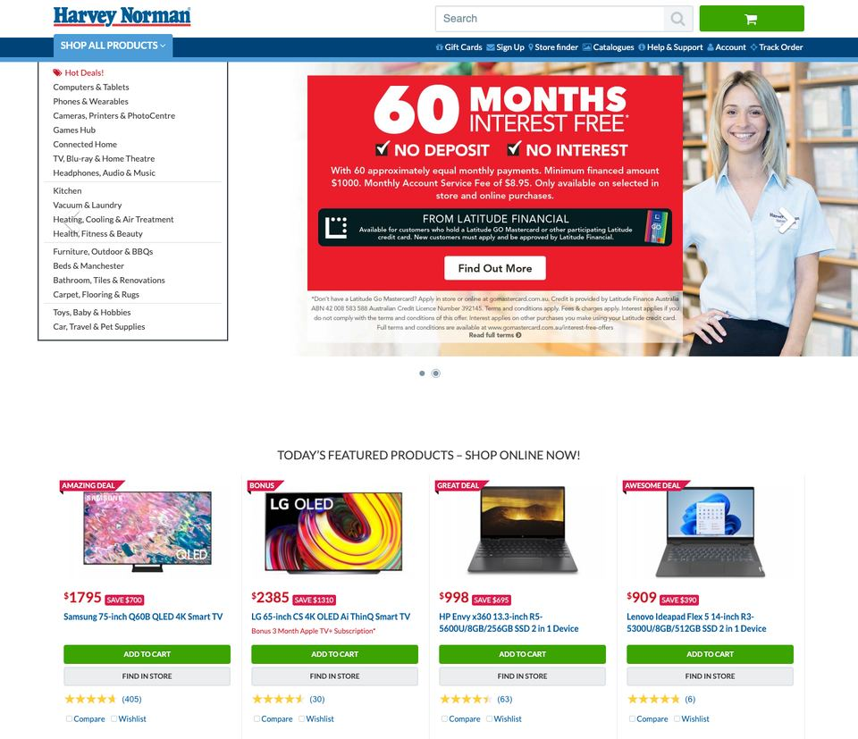
Unchanged through 2023.
Open this snapshot in the Internet Archive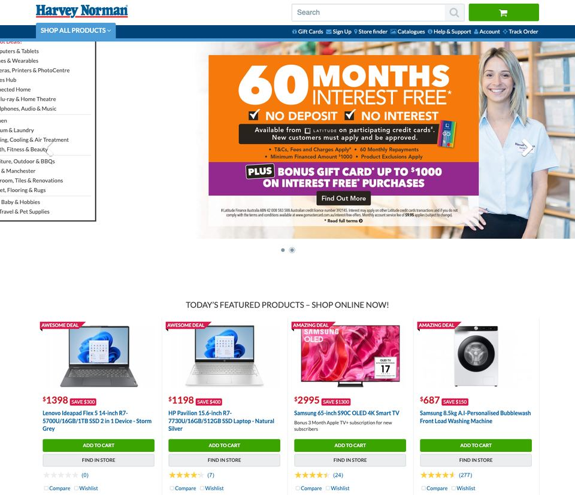
Text menu, banner, featured products.
Open this snapshot in the Internet Archive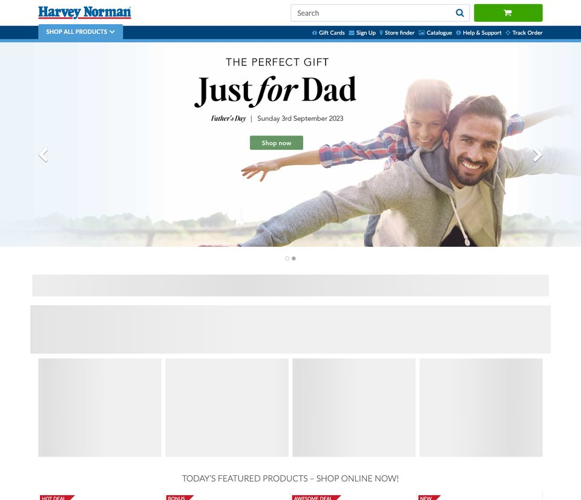
Still the Shop All Products menu. Under a full-width banner, content blocks load by script (grey here, because the archive didn’t keep them), then featured products.
Open this snapshot in the Internet ArchiveBanner, then featured products. No category row.
Open this snapshot in the Internet ArchiveToday’s design arrives: a new header with a Shop menu button and a Hot Deals link, a banner carousel, then featured products. No category row.
Open this snapshot in the Internet Archive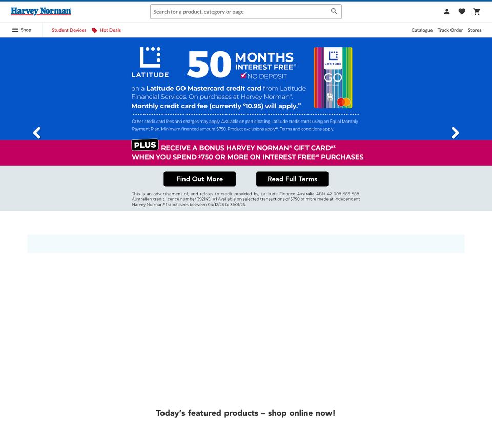
Today’s layout: the Shop menu, a banner carousel, then featured products. The promotion tiles under the banner load by script, so the archive doesn’t show them.
Open this snapshot in the Internet ArchiveSnapshots: one from each January and July where the archive kept the page properly, plus September 2023, May 2025 and December 2025, when the design changed. Nine others (2021, January 2022, March and July 2024, January and July 2025, and 2026) lost their styling in the archive and are left out, and the archive has no usable 2018 snapshot. Prices and offers in the banners are as they were on the day, not current.